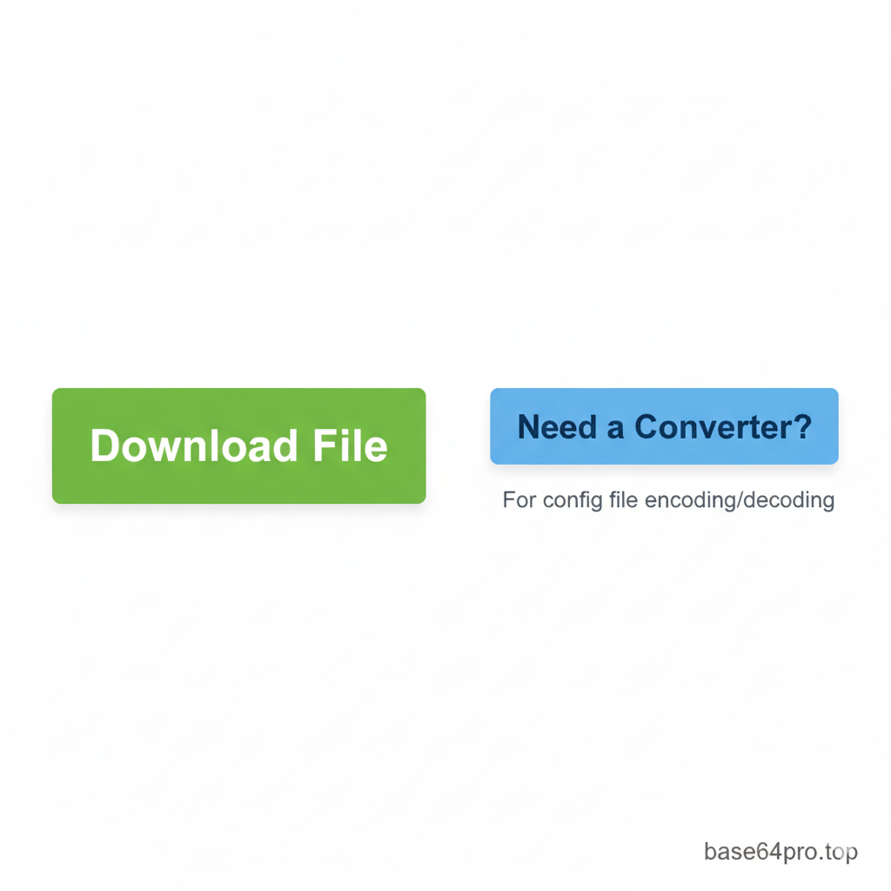

Expert Gaming Guides by Base64Pro.top
The Ultimate Guide to 120 FPS in PUBG/BGMI: A Deep Dive
Go beyond the basics. Understand the tech, the risks, and the right way to achieve buttery-smooth gameplay.
From Lag to Lead: Why 120 FPS is a Competitive Game-Changer
In high-stakes games like PUBG and BGMI, every millisecond counts. Moving from 60 FPS to 120 FPS isn't just a minor upgrade; it's a fundamental shift in gameplay experience. You get:
- Crystal-Clear Motion: Tracking fast-moving enemies becomes effortless as motion blur is drastically reduced.
- Faster Reaction Time: With double the frames, you see information on screen sooner, allowing your brain and hands to react quicker.
- Smoother Aiming & Recoil Control: Your crosshair movement feels more fluid and responsive, making recoil patterns easier to manage.
Simply put, it's the closest you can get to a "legal" advantage in the game, bridging the gap between mobile and PC-level performance.
The Truth About Config Files: Why Can't You Just Enable It in Settings?
You have a powerful phone with a 120Hz screen, yet the game caps you at 60 or 90 FPS. Why? Game developers intentionally "whitelist" specific device models for higher frame rates. This is done to:
- Ensure Stability: Prevent less powerful devices from overheating or crashing, which leads to bad reviews.
- Manage Battery Life: 120 FPS consumes significantly more power.
- Marketing Partnerships: Sometimes, high-FPS modes are exclusive to newly launched flagship phones for a period.
A custom config file essentially overrides this whitelist, telling the game engine to unlock its full potential on your capable hardware.
A Crucial Warning: Understanding the Risks
Before you proceed, we need to be completely transparent. Modifying game files is against the Terms of Service of virtually every online game. While simple graphical configs like this are often considered "low-risk" compared to cheating hacks, a risk still exists.
How are bans triggered? Games can run file integrity checks. If they detect modified files, an automated system could flag your account. The probability is low, as developers primarily hunt for cheats that give unfair advantages (like wallhacks or aimbots), but it is never zero.
Our Commitment: The config file we provide **only modifies graphical settings**. It contains no cheats. We have tested it on multiple devices for stability. However, you must use it at your own risk. Base64Pro.top is not responsible for any actions taken against your game account.
Step-by-Step Installation Guide
Watch the Full Installation Tutorial
Step 1: Get the Tested 120 FPS Config File
Download the latest version of our 120 FPS Config, which we regularly test after major game updates. This ZIP file contains the necessary `Config`, `rawdata`, and `SaveGames` folders.
Download 120 FPS Config (v3.2 - Stable)Step 2: Decode (If Needed) & Extract
Some content creators share configs as Base64 text. If you have a Base64 string, our ad-free tool ensures a perfect, error-free conversion.
Use Our Safe Base64 Config Converter After downloading or converting, use a file manager (we recommend ZArchiver) to extract the ZIP file's contents.
Step 3: Correct Installation
This is the most critical step. Copying to the wrong location will result in failure. Follow this path precisely.
- In your file manager, select and copy the three folders (`Config`, `rawdata`, `SaveGames`).
-
Navigate to your device's internal storage and follow this path:
/storage/emulated/0/Android/data/com.pubg.imobile/files/UE4Game/ShadowTrackerExtra/ShadowTrackerExtra/Saved/SaveGames
- Paste the folders. When prompted, choose to overwrite or replace all existing files.
- Important: Go to your phone's App Settings, find PUBG/BGMI, and **clear the cache** (not data!). This forces the game to load the new config.
Frequently Asked Questions (FAQ)
1. Will this work after a new game update?
Often, major updates reset config files. You may need to re-apply the files. We update our link here if a new config is required, so bookmark this page.
2. My game still feels laggy. What's wrong?
Ensure your phone's display is set to 120Hz in Android Settings. Also, close all background apps before playing. If your device tends to overheat, performance will drop regardless of the config. Consider using a phone cooler for long sessions.
3. Is this config safe for my main account?
As stated in our risk section, there is always a minimal risk. We recommend testing on a secondary account first if you are concerned. That said, thousands of players use graphical configs daily without issue.
4. Does this work on iOS / iPhone?
No. This method is for Android only, as iOS does not allow user access to game data folders in the same way.